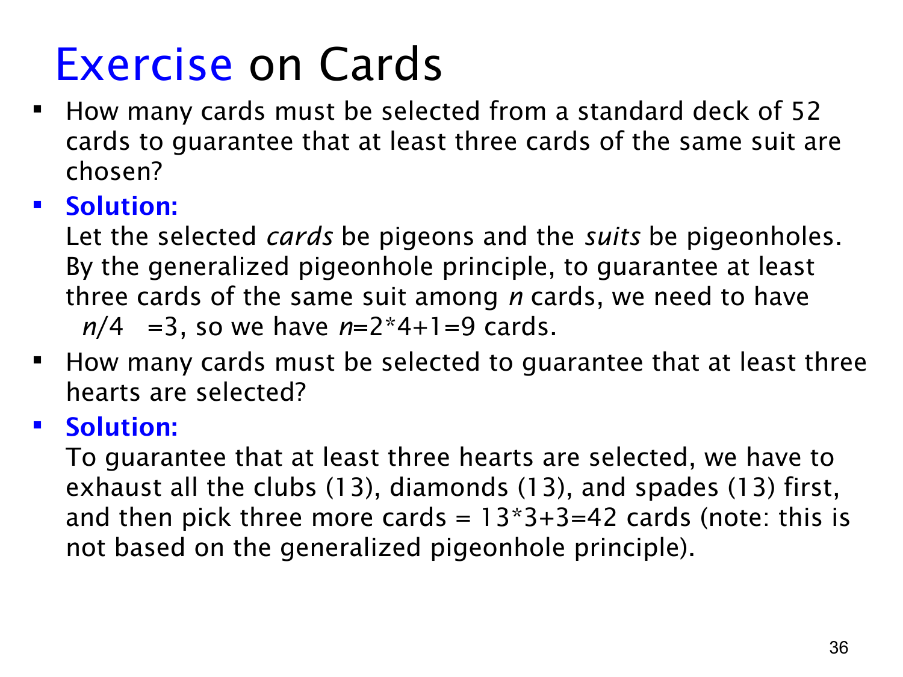

课件第 36 页讲解原文
查看这一页课件

任意一种花色与指定红桃，保证条件不同
标准 52 张扑克牌有 4 种花色，每种 13 张，不含大小王。题目默认从牌堆中选出不同的牌，不放回。
第一问：至少抽多少张，才能保证某一种花色有至少 3 张？ 把选出的牌当作对象，4 种花色当作盒子。为了尽量避免出现三张同花色，可以让每种花色先各有 2 张，共 4×2=8 张。第 9 张无论是什么花色，都会使某种花色达到至少 3 张。
因此最少需要：
4(3−1)+1=9 张.
8 张仍可分成每种花色 2 张，所以 9 不仅足够，也是最小保证数量。
第二问：至少抽多少张，才能保证有至少 3 张红桃？ 这次目标花色已经指定，不能只保证“某一种花色”很多。最坏情况下，可以先抽完所有非红桃：梅花、方块、黑桃各 13 张，共 39 张。
再抽 2 张红桃时，共有 41 张，仍未达到三张红桃。第 42 张才必然使红桃至少有 3 张。因此：
39+3=42 张.
也可以直接说明：任何 42 张牌中，非红桃最多 39 张，所以红桃至少有 42−39=3 张。
9 张可能全是黑桃，因此第一问的答案绝不能直接用于第二问。区别在于第一问只要求存在一种花色满足条件，第二问要求红桃这一指定类别满足条件。两题都可以从“目标尚未发生时，最多容纳多少张”来思考。